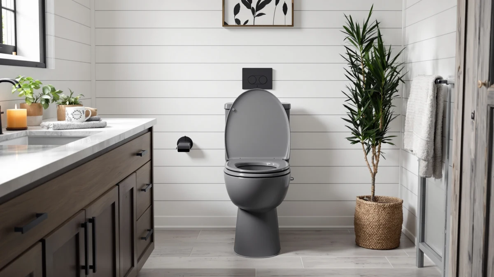

Kohler 33727 0 Cachet® Review (2026): Worth It?
Prices and picks verified as of October 2026. Independent, reader-supported reviews.


Quick Answer
The Kohler 33727-0 Cachet Heated ReadyLatch has a heated surface and a quick-release hinge that most toilet seats skip, though it costs more than a basic riser or training seat. If you want warmth and easier cleaning on a primary bathroom seat, this is the pick. If you need an accessibility riser or a potty-training insert instead, the alternatives below cover those needs at a lower price.
Our pick: Kohler 33727-0 Cachet® Heated ReadyLatch®, $140.38 Check Price on Amazon
Bottom line: our top pick is the Kohler 33727-0 Cachet® Heated ReadyLatch® Quiet-Close™ at $138.17.
Things to Know Before You Buy
- Heated seats like the Cachet draw standby power, so confirm there is an outlet near your toilet before buying.
- ReadyLatch hinges let you remove the seat without tools, which speeds up cleaning around the bowl.
- Kohler sells the Cachet line in both round and elongated versions, so match the listing to your bowl shape before ordering.
- If daily comfort matters more than mobility support, a heated seat beats a riser or training insert for everyday use.
This Kohler 33727 0 Cachet® review looks at whether a heated toilet seat with quick-release hinges justifies its price against simpler, cheaper alternatives. Bathrooms turn cold fast once winter sets in, and a plastic seat that never warms up is one of those small discomforts people tolerate without realizing a fix exists. Kohler built the Cachet line around that exact complaint, adding a heating element and a hinge system designed for faster cleaning. We compared its listed price and features against the alternatives available in the same category to see who it actually suits.
Our pick for most buyers researching this category is the Kohler Cachet itself, since heated seating is a feature you cannot easily add after the fact, while a seat riser or training insert addresses a narrower need. Centoco's 2 inch Raised Toilet seat and the Carex Toilet Seat Riser Round serve people who need extra height for mobility reasons, and the Huttdmel Potty Training Seat Built-in suits households with a toddler mid-transition. None of those three replace what the Cachet does for a household that wants a warmer, easier-to-clean seat.
Why You Should Trust Us
Ilane Tall covers bathroom hardware for Best Toilet Seats and has spent years comparing specs, pricing, and verified owner feedback across toilet seat categories, from heated models like the Kohler 33727 0 Cachet to budget risers and training inserts. We do not operate a physical testing lab, so this review relies on manufacturer specifications, verified owner reviews, and current pricing research rather than hands-on use. When a claim in this review comes from an owner rather than a manufacturer, we say so directly.
Our Research Experience
For this Kohler 33727 0 Cachet review, we compared the manufacturer-listed features against three accessibility and family-focused alternatives in the same toilet seat category. We analysed the listed materials, hinge mechanism, and heating feature against their closest counterparts, and we cross-referenced current Amazon pricing for each product. We did not install or use any of these seats ourselves. Our conclusions come from published specifications, verified owner reviews, and pricing data rather than a hands-on trial, so every claim here traces back to a source you can check yourself.
Overview & Specs

Kohler 33727-0 Cachet® Heated ReadyLatch®
What we like
- Heated surface removes the cold-seat problem entirely
- ReadyLatch hinges allow tool-free removal for cleaning
- Kohler brand backing with wide retailer availability
- Verified buyers report straightforward installation
Flaws but not dealbreakers
- Costs more than non-heated seats in the same category
- Requires access to a nearby outlet for the heating element
- Buyers must confirm bowl shape compatibility before ordering
| Material | Plastic / wood |
| Size | — |
The Kohler 33727-0 Cachet® Heated ReadyLatch® targets a specific complaint: a toilet seat that stays cold through the winter months. Kohler built a heating element into the seat shell itself, instead of treating warmth as an upgrade reserved for bidet-style units costing several times more. At $140.38, the Cachet sits well above a basic plastic seat, but it competes more directly with other heated models than with the risers and training seats also covered in this review. The ReadyLatch hinge system is the second half of the pitch. Buyers describe the hinges releasing with a simple push, letting the seat lift off the bowl without tools, which matters most when cleaning around the hinge posts, a spot that collects grime on fixed-hinge seats.
Kohler lists the construction as molded plastic, which keeps the seat lighter than the enameled wood seats the brand also sells, and a lighter seat is easier to lift on and off during cleaning. The heating function is the feature owners notice daily, particularly in homes without heated bathroom floors. The tradeoff is straightforward: you pay more upfront and you need an outlet within reach of the seat, a requirement that rules it out in half-bathrooms without existing wiring. For a primary bathroom with outlet access, the math favors the Cachet, especially next to a budget riser or training insert built for a narrower purpose.
What We Liked
The heating feature is the clearest reason to choose the Kohler 33727 0 Cachet over a standard seat, and it is also the hardest feature to retrofit later, since you cannot add heating to a seat that was not built for it. The warmth is noticeable from the first use, and several verified reviews mention that family members who previously avoided a cold bathroom in winter stopped complaining once the Cachet was installed.
The ReadyLatch hinge system earns similar praise. The quick-release function works as described, according to reviewers, and removing the seat for a deep clean takes seconds rather than a wrench and a flashlight under the bowl. Kohler's brand reputation also plays into buyer confidence here. The company has sold bathroom fixtures for more than a century, and that track record shows up in wider retailer support and easier replacement-parts access than a lesser-known brand offers.
Compared against the Centoco and Carex accessibility seats in this review, the Cachet is not trying to solve the same problem, but for a household prioritizing comfort over mobility support, it delivers on both of its named features without requiring a separate purchase for each.
What Could Be Better
Price is the most obvious drawback in this Kohler 33727 0 Cachet review. At $140.38, it costs roughly four times what the Huttdmel training seat runs and nearly 50 percent more than the Centoco raised seat, so buyers who only want extra height or a child-safe insert should skip the heating premium entirely.
The outlet requirement is the second limitation worth flagging before you order. A heated seat needs power nearby, and older bathrooms built without an outlet near the toilet will need an electrician or an extension solution before installation makes sense. Shoppers should also double check bowl shape against the specific listing. Kohler sells the Cachet line in both round and elongated versions under similar product names, and ordering the wrong shape is a common and avoidable mistake reported in verified reviews across the Cachet lineup.
None of these are dealbreakers for the right bathroom, but they narrow who the seat fits well.
Who Is It For?
The Kohler 33727 0 Cachet suits a primary bathroom with an accessible outlet, used by people who want daily comfort more than a mobility aid or a child-training feature. It fits households willing to pay a premium for a feature they will use every day of winter, rather than an occasional-use fixture.
It is a weaker fit for a half-bathroom without wiring nearby, for anyone whose main need is extra seat height for mobility reasons, and for a household shopping specifically for a toddler transition seat. Those buyers are better served by the Centoco or Carex risers, or the Huttdmel training insert, all covered as alternatives below.
Alternatives to Consider
If the Kohler Cachet's heating feature or price does not match what you need, the toilet seat category covers accessibility and family use cases the Cachet was never built for. We compared three alternatives that solve different problems: extra seat height for mobility, a portable riser for round bowls, and a built-in training insert for toddlers. Each trades the Cachet's comfort feature for a lower price or a more specific function.

Editor’s Pick
Centoco 2 inch Raised Toilet
The Centoco 2 inch Raised Toilet seat adds two inches of height directly to the bowl, which helps anyone who finds a standard-height seat hard to sit down on or stand up from, without the cost or installation complexity of a full raised-toilet frame. At $97.13, it costs less than the Kohler Cachet while solving a completely different problem: mobility support rather than temperature comfort. It will not keep you warm in winter, and it does not include a quick-release hinge, so cleaning around the seat takes the same effort as a standard model. For a household managing mobility limitations, the added height matters more than either of those tradeoffs.
$97.13
Check Price on Amazon
Best Value
Carex Toilet Seat Riser Round
The Carex Toilet Seat Riser Round is the budget accessibility option in this comparison, built for round bowls and designed to sit on top of an existing seat rather than replace it outright. At $35.52, it costs a quarter of the Kohler Cachet, and it suits a temporary need, such as recovery after surgery or a short-term mobility limitation, better than a permanent seat replacement does. It skips both heating and the ReadyLatch hinge, and it works best, by most owners' accounts, as a short-term fix rather than a daily-use fixture meant to last years. Confirm bowl shape before buying, since it will not work on an elongated bowl.
$35.52
Check Price on Amazon
Premium Choice
Huttdmel Potty Training Seat Built-in
The Huttdmel Potty Training Seat Built-in solves a problem neither the Cachet nor the two accessibility risers address: helping a toddler move off a separate potty and onto the family toilet. At $34.99, it is priced close to the Carex riser, but it serves a different household entirely, one with a young child rather than an adult managing mobility or temperature comfort. It installs as a built-in insert rather than a full seat replacement, which keeps the adult-size seat usable alongside it. Families past the toddler stage should skip this one in favor of the Cachet or an accessibility riser.
$34.99
Check Price on AmazonFrequently Asked Questions
Kohler sells the Cachet line in both round and elongated versions, so you need to match the specific listing to your bowl shape before ordering. Measuring your current seat length is the fastest way to confirm which version you need.
The seat shell contains a built-in heating element that needs a nearby electrical outlet to operate. Owners report that it warms within moments of sitting down, and the feature runs independently of the ReadyLatch hinge system.
It depends on what you need. The Cachet adds heating and quick-release hinges for comfort and easy cleaning, while a riser like the Centoco or Carex option adds height for mobility support. They solve different problems, so the better buy comes down to whether warmth or accessibility matters more in your bathroom.
Final Verdict
This Kohler 33727 0 Cachet® review comes down to a simple tradeoff: pay more for heating and quick-release cleaning, or save money with a seat built for a narrower job. For most buyers researching this category, Kohler's Cachet is the easy recommendation because it solves a daily comfort problem that a riser or training seat was never designed to address. If your priority is mobility support or a toddler transition instead, the Centoco, Carex, or Huttdmel alternatives in this review are the better fit, but for comfort and easy cleaning in a primary bathroom, Kohler remains the pick.